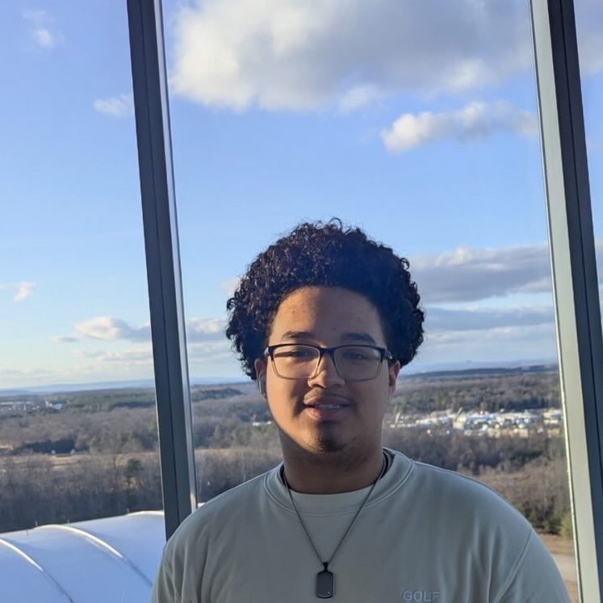

Gabriel Haynes
Student, student leader, and musician building toward a future in psychology, one project, performance, and community circle at a time.

01Who I am
I'm a student at Arlington Tech, the Governor's STEM Academy in Arlington, Virginia, where I'm pursuing my Advanced Studies Diploma alongside a General Studies Associate's Degree through Northern Virginia Community College. Both are expected in June 2027.
I'm drawn to psychology because I like understanding why people think and act the way they do, and I want to use that understanding to help people directly. Outside of academics, I lead, perform, and volunteer every chance I get, and music ties most of it together. This site is my home base for all of that: who I am, what I've worked on, and how to reach me.
02Leadership & school involvement
Arlington Career Center Boys Cohort
I help guide students who need a support group to join the cohort, and I co-lead meetings focused on how to grow as students, as future men, and as a supportive community for each other.
Arlington Tech Student Government
I take notes on how to improve the school environment, communicate with the student body about the changes they want to see, and help bring those changes into our school environment.
Grace Hopper Center Tours
As an ambassador, I lead tours around Grace Hopper Center, Arlington Tech's new building, helping visiting students, families, and community members get a feel for our school and programs.
Arlington Tech Law / Public Speaking Club
I listen to practicing lawyers talk through how to sharpen communication skills, read body language, and stand out in interviews, presentations, and other professional settings.
03Awards & certifications
- 2nd place across the DMV region, Stock Market Game for Economics (March 2025)
- District Semi-Finalist, Oratorical Contest for Public Speaking (April 2025)
- Workplace Readiness Test, completed (February 2024)
Want the full picture of my coursework, experience, and activities? My resume is on the contact page.